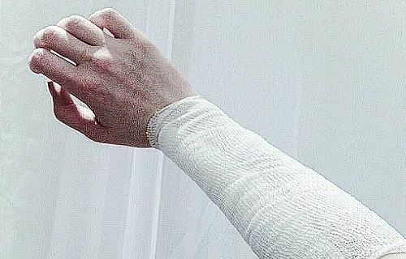
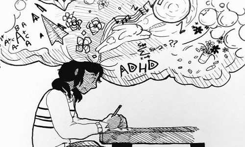
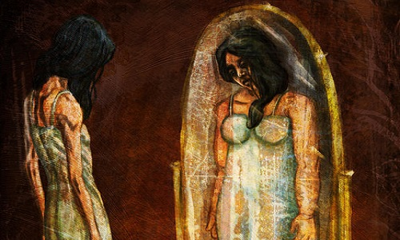

Deprese

Zprvu je nutné rozlišit depresivní poruchu od obyčejného smutku ("depky").
Obyčejný smutek se dostaví člověku například po rozchodu, týden nebude mít chuť do ničeho, začne třeba i méně jíst, ale po týdnu se zase vše začne vracet do normálu.
Takhle vypadá normální lidská reakce na smutnou událost.
Na druhé straně, když jde o depresivní poruchu, může tento stav trvat i měsíce a přijít bez zjevného podnětu.
Deprese jakožto nemoc
Nejzákladnější dělení je podle závažnosti na lehkou, střední a těžkou. Příznaky se liší od osoby k osobě, často i do opačných extrémů. Například nedostatek spánku nebo jeho nadbytek. U obou jedinců je přesto často doprovází únava nebo slabost. Dalšími příznaky mohou být zvýšená nebo snížená chuť k jídlu, snížená sebedůvěra a pesimismus. Deprese většinou přicházejí v epizodách (vracejí se), někteří lidé mohou pociťovat sezónní deprese ("zimní deprese"). U této deprese je nutné poznamenat, že není deprese jako deprese. Velmi se liší podle závažnosti, nejnebezpečnější pak je, že u závažných typů probíhá sebepoškozování a bývá riziko sebevraždy.Chronická deprese
Dělí se na dva typy. Prvním je dystymie. Dystymie je, alespoň 2 roky trvající depresivní nálada se stejnými příznaky výše uvedené. Většinou však s mírnějšími příznaky. Druhým typem je cyklotymie, což je alespoň 2 roky trvající nestabilita nálady doprovázená mírnými depresivními nebo manickými fázemi. V průběhu se ale mohou, i nemusí, objevit i fáze s normální náladou.Bipolární porucha
U této poruchy se u jedince střídají manické a depresivní epizody. Projevují se fázemi, kdy je člověk nadmíru sklíčený či smutný, a v jiných případech zase prožívá fáze s pozdviženou náladou. Může se také stát, že se projeví obě epizody ve stejnou chvíli. To pak probíhá tak, že má jedinec zvýšené psychomotorické tempo (rychlost procesů v mozku, což dodává inspiraci), ale úplnou nechuť cokoliv dělat. U extrémních případů se mohou vyskytnout i bludy a/nebo halucinace. Také při extrémnějších depresivních epizodách hrozí sebevražda.Psychózy

Psychóza je závažný duševní stav, který se charakterizuje disociací od reality. Je to vlastně odcizení jedince od jeho chování, vnímání a prožívání reality.
Nejčastěji se projevuje u lidí ve věkové kategorii od pozdní fáze puberty do 25 let, může se však vyskytnout i dříve i později.
Příznaky pak můžeme dělit na aktivní a pasivní. Aktivní příznaky jsou tedy halucinace, bludy a paranoia.
Halucinace nemusí být jen vizuální, mohou být i zvukové (naopak jsou nejčastější), nebo třeba pocit, že se jedince někdo dotkl.
Bludy znamenají, že jedinec bezmezně věří v nějaký fakt, který není pravdivý, i když ho nemusel vidět stát, nebo neměl zvukovou halucinaci,
která by mu o tom říkala. Třeba že jedince zamýšlejí unést a zabít špióni. Pasivní příznaky jsou pak těžkosti přemýšlet logicky a bez rozptylování,
nechuť se socializovat, podivné nápady, divné pocity, nebo jejich absence, úpadek hygieny, problémy se spánkem, problémy s rozlišováním reality od fantazie,
zmatená mluva a problémy ve škole či práci.
Schizofrenie
Nejznámějším typem psychózy je schizofrenie, která sdílí symptomy s výše uvedenými. Schizofrenik si neuvědomuje, že jeho halucinace nejsou reálné. Halucinace přicházejí v podobě epizod, to znamená, že se neléčené opakují. Tyto epizody se mohou lišit podle síly halucinací a dalších faktorů. Přibližně polovina schizofreniků páchá pokus o sebevraždu, přičemž šance se zvyšují s častějšími momenty klarity v mysli, kdy si je jedinec schopen uvědomit, v jak zlém stavu vlastně je. Schizofrenie je jedna z nejnebezpečnějších a nejhorších duševních poruch.Drogově vyvolaná psychóza
Drogově vyvolaná psychóza, jak už vyplývá z názvu, je psychóza vyvolaná zneužíváním drog. Ať už nadměrnou jednorázovou dávkou, nebo častěji aktivním dlouhodobým používáním (závislostí). Šance na vyvinutí této poruchy se značně zvyšují s genetikou, ale v extrémních drogových případech si ji může vyvinout člověk bez historie jakékoliv poruchy. Na rozdíl od například schizofrenie nebývají případy nutně doživotní, a s medikací se jí člověk do pár měsíců může zbavit, nemusí tomu tak však vždy být. Záleží na genetice člověka a závažnosti případu. Příznaky pak bývají stejné jako výše uvedené, častěji také závažnější, hlavně jedinec může zažívat více halucinací.ADHD

ADHD, neboli anglicky Attention-Deficit/Hyperactivity Disorder, je porucha pozornosti a hyperaktivity.
Je nejčastější duševní poruchou u dětí, přičemž téměř polovina dětí s touto poruchou s ní přetrvává do dospělosti.
Ovlivňuje schopnost jedince soustředit se, vyvolává nutkání k pohybu, který nemusí být vždy vhodný v některých situacích (škola, kanceláře, ...)
a impulzivní rozhodování, jako například promluvení bez jakékoliv myšlenky.
Spousta dětí má problémy s udržením pozornosti a sezení v klidu, ale rozhodujícím faktorem je škála, v jaké se tyto situace dějí, a věková kategorie dětí.
Podle statistik trpí zhruba 8 % dětí ADHD. ADHD má i pozitivní aspekty, například to, že jedinci mívají spoustu zájmů a bývají nápaditější.
Hyperaktivní/impulsivní subtyp
ADHD se převážně dělí na 3 typy, přičemž prvním z nich je hyperaktivní/impulsivní subtyp. Tento typ je charakterizován nutkáním k nadbytečným pohybům, jako je například hraní si s něčím, energičtějšími pohyby nebo problémy se sezením v klidu. Impulsivní část tohoto typu znamená, že jedinec má tendenci dělat věci bez rozmyšlení. Dalším příznakem je nadměrné mluvení, skákání ostatním do řeči a celková netrpělivost.Nepozorný subtyp
Druhým typem je nepozorný subtyp. Charakteristické pro jedince s tímto typem ADHD je problém udržet pozornost, neschopnost následovat zadání, časté problémy ve školách nebo na pracovištích. Jedinec mívá problémy s organizací času, vyhýbá se úkolům, které vyžadují dlouhodobé nebo intenzivní myšlení, častěji zapomíná nebo ztrácí věci.Kombinovaný subtyp
Tento typ je kombinací předchozích dvou a projevují se u něj příznaky z obou.Poruchy osobnosti

Narozdíl od duševních onemocnění jsou poruchy osobnosti spíše drastickými osobnostními odchylkami než chorobami.
Často mají neurotický podtext. Poruchy osobnosti bývají velmi komplexní a mohou se projevovat nejrůznějšími příznaky. Dělí se dále do klastrů.
Klastr A
Do klastru A spadají poruchy osobnosti, které se vyznačují zvláštním a neobvyklým chováním. Mezi tyto poruchy patří paranoidní, schizoidní a schizotypální poruchy osobnosti.Klastr B
Klastr B zahrnuje poruchy osobnosti, které se projevují výrazně emotivním, dramatickým a proměnlivým chováním. Patří sem disociální (antisociální), histrionská, narcistická a emočně nestabilní poruchy osobnosti.Klastr C
Klastr C zahrnuje poruchy osobnosti, které se projevují úzkostným, vyhýbavým nebo nutkavým chováním. Patří sem vyhýbavá (anxiózní), závislá, obsedantně-kompulzivní (anankastická) a pasivně agresivní poruchy osobnosti.Poruchy příjmu potravy

Jde o odmítnutí příjmu potravy kvůli zkreslené představě o vzhledu těla jedince.
Narozdíl od domněnky, že tímto onemocněním trpí pouze ženy, může jím trpět kdokoliv, bez ohledu na věk nebo pohlaví. Nejčastěji jde o anorexii nebo bulímii.